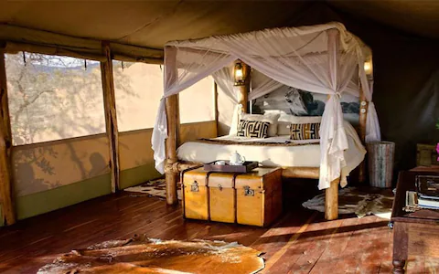
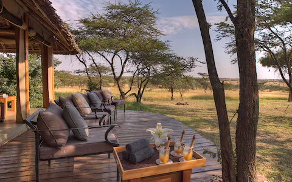

Medina Palms
Expert Rating:8/10
Medina Palms combines Arabic and Mediterranean influences in a palatial retreat that is popular with honeymooners and families alike. While a fairly large resort, large apartment-style units allow guests to get that rented house feel, without the bother of self-catering.
Watamu, KenyaFROM £ 161 pn
Watamu Tree House
Expert Rating:8/10
The Gaudi-esque Treehouse is an unusual and enchanting hotel, as tranquil in ambiance as the blanket of emerald forest and pristine beach that envelops it. The two dove-white towers are an architectural delight: built mostly without walls they offer 360 degrees views over the Kenyan coastline
Watamu, KenyaPrice:FROM £ 71 pn
House of Waine
Expert Rating:8/10
House of Waine is a cool retreat from the bustle of the Kenyan capital, located on the former coffee plantation of Karen Blixen (see the hand-drawn map on the grand staircase) and convenient for safari flights from nearby Wilson Airport. Expect a homely atmosphere, tropical gardens, and unflappable staff
Nairobi, KenyaPrice:FROM £ 385 pn
Little Governor's Camp
Expert Rating:8/10
Nature is king at this luxury, yet unassuming, camp that skirts the shores of a marsh teeming with birds and wildlife. Little Governor’s offers a classic safari experience with a few frills, is quiet and relaxed and has great wildlife viewing on its (tented) doorstep.
Location: Maasai Mara National Reserve, KenyaPrice:£ 566 pn
Afro Chic Diani Beach
Expert Rating:8/10
A coconut tree-studded home from home in a prime position on Kenya’s finest beach. With friendly staff, cosy but not cramped, modern boutique AfroChic is a superior alternative to the mammoth hotels elsewhere on the coast
Location: Diani Beach, KenyaPrice:FROM £ 330 pn
i1 Ngwesi Echo Lodge
Expert Rating:7/10
Of myriad luxury safari lodges, the boutique Il Ngwesi, in its stunning setting, offers perhaps the greatest luxury of all: access to the vibrant community it serves to benefit. All workers are Masai locals; their respect and enthusiasm for the land is infectious.
Location: Laikipia, KenyaPrice:FROM £ 267 pn
Joy's Camp
Expert Rating:7/10
Set in the semi-arid Shaba National Reserve, this tented camp overlooks a fertile spring. Accommodation is in spacious canvas bedrooms with en-suite bathrooms, and the kitchen prepares dishes with an Italian influence. Activities include game drives and walking safaris.
Location: Isiolo, KenyaPrice:FROM £ 501 pn
Campi Ya KaziExpert Rating:7/10

Campi Ya Kanzi is a Kenya safari lodge hotel offering bush-inspired interiors, luxurious tent accommodation, an eco-friendly ethos, miles of bush for game-viewing, a swimming pool, horses, massages, and its own private plane, in the Chyulu Hills near Mount Kilimanjaro and the Amboseli and Tsavo national parks
Location: Mtito Andei, KenyaPrice:FROM £ 1,335 pn
Naboisho CampExpert Rating:8/10

Medina Palms combines Arabic and Mediterranean influences in a palatial retreat that is popular with honeymooners and families alike. While a fairly large resort, large apartment-style units allow guests to get that rented house feel, without the bother of self-catering.
Location: Watamu, KenyaPrice:FROM £ 540 per person per night